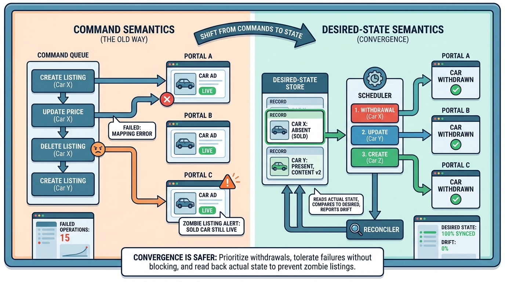

Part IV — DEALER: The Used-Car Workflow
One Stock, Sixty Channels: Listing Syndication to Portals

Image generated by Google Gemini (gemini-3-pro-image-preview)
Part IV — DEALER: The Used-Car Workflow

Image generated by Google Gemini (gemini-3-pro-image-preview)